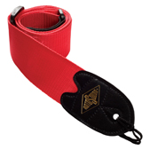
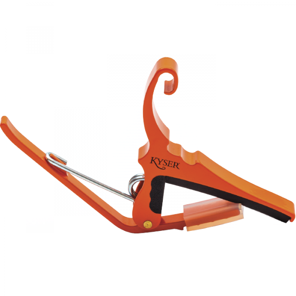
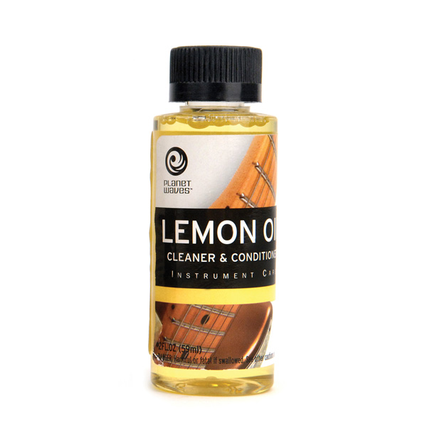
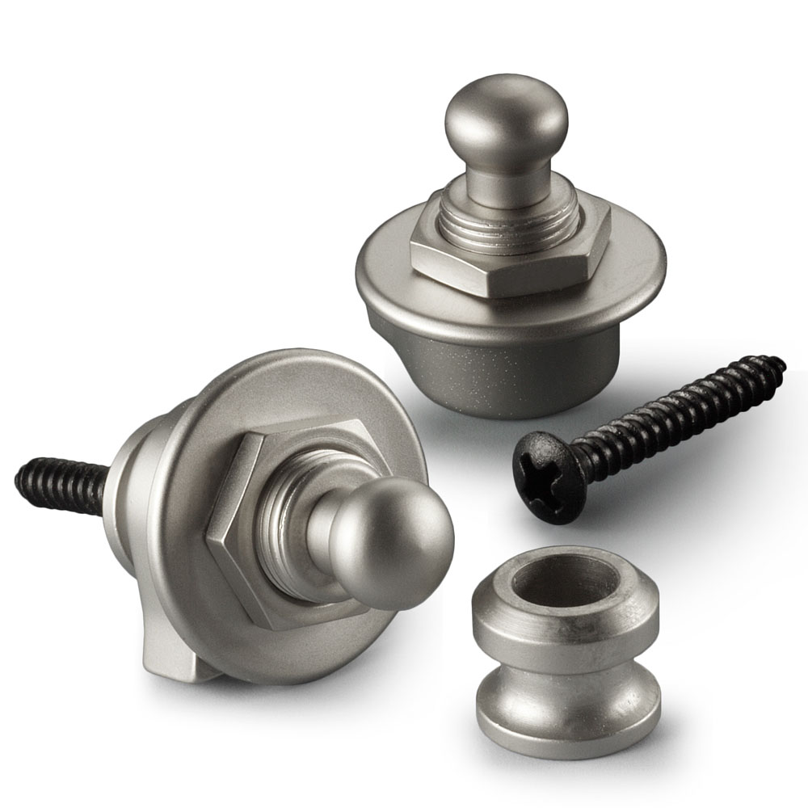
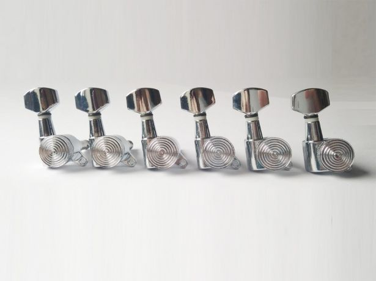
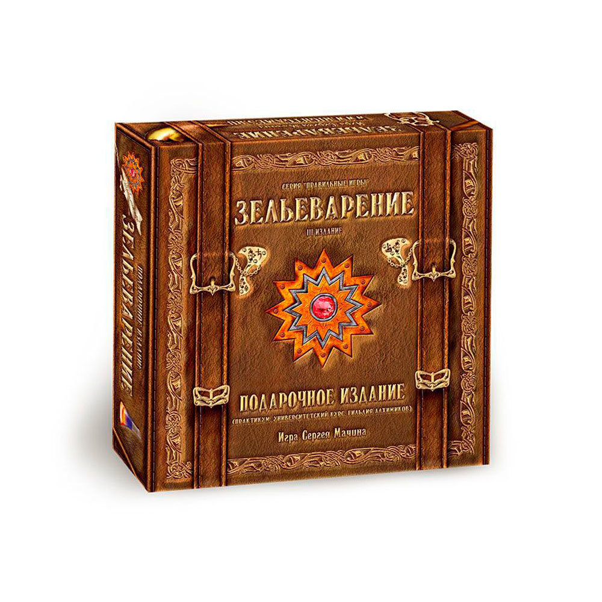
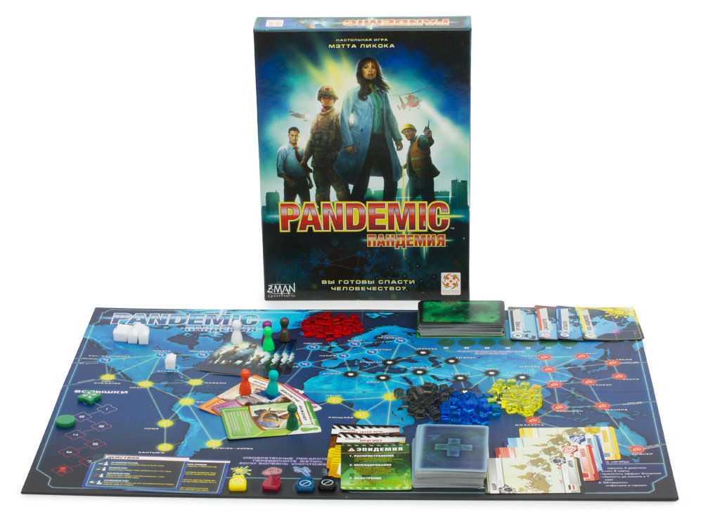
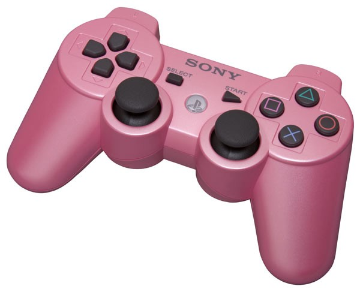

Wishlist
Самым лучшим подарком для меня будет ваше присутсвие и ваше хорошее настроение
Но меня все равно спрашивают «Что подарить?» поэтому я подготовил небольшой список:
-
Ремень для гитары. Розовый или фиолетовый вообще супер.

-
Каподастр. Цвет не важен, но если вдруг розовый, фиолетовый или оранжевый ..ммм

-
Лимонное масло

-
Стреплоки для гитары

-
Колки для Электрогитры, 6 в ряд

-
Настольная игра Зельеварение

-
Настольная игра Пандемия (не Legacy)

-
Джойстик Sony Dualshok 3 розового цвета
(Обратите внимание на центральную кнопку, там должна быть эмблема, а не буквы PS)

- А также я буду рад толстовке, футболке, деньгам и всему, что вы придумаете=)